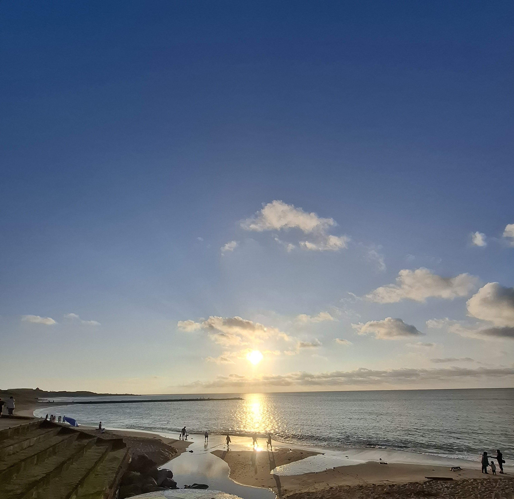

隨著人口老化逐漸增長，如何安排好自己的老年生活？顯得格外重要！首先健康的身體，是生命的泉源，所以體能需鍛鍊。再來是精神上的修煉，(情緒的修養)與物質上的取捨(知足常樂)。
子曰：五十知天命，六十而耳順，七十隨心所欲，不逾矩。孔子在人生的每個階段，都做了心得報告。孔老先生在五十歲時，知道了自己的天命。接著孔子五十五歲便開始了十四年周遊列國，現在聽起來很簡單，在那時是極為困難。其實孔子要開創自己的霸權王朝，絕對是沒有問題。他的門徒是各國的要職人員及菁英，但孔子選擇用仁。孔子曰：及其老也，血氣既衰，戒之在得。在各方面的，得失心的調整。
范蠡也是知天命，幫越王復國後。我一直在思考范蠡為何，一幫忙越王勾踐就選擇離去？只是如他寫給文種的信，飛鳥盡，良弓藏；狡兔死，走狗烹？其實范蠡應該是悟道了，一個悟道的人，他的生命主導權。范蠡離開越國後，越國也持續強盛了約百年，這是當初為越國打下的基礎。范蠡得道之人維度的跨越，到第四維度去了。
【請在此輸入你想分享的文字、自序或理念】
【請在此輸入個人簡介或經歷】